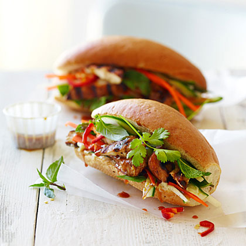

Grilled Chicken Banh Mi★
 4 servings
4 servings 1.5 hour
1.5 hour Source
Source Meat
Meat

- Chicken:
6chicken breast (3lbs.)4 tbsp.hoisin sauce, divided1 tsp.Chinese five-spice powder2 tbsp.reduced-sodium soy sauce2 tbsp.vegetable oil, divided- Pickled Veggies:
1Cucumber, juliened2medium carrot, juliened2jalapenos, coined- Sandwich:
4sandwich rollsCilantro and Thai basil for garnish- Sauce:
4 tbsp.hoisin sauce, divided2 tbsp.vegetable oil, divided4 tbsp.lime juice1 tbsp.Thai or Vietnamese fish sauce- Sriracha Mayo:
1 cupmayo3 tbsp.Sriracha chili sauce1garlic clove mincedSalt to taste
6chicken breast (3lbs.)4 tbsp.hoisin sauce1 tsp.Chinese five-spice powder2 tbsp.reduced-sodium soy sauce2 tbsp.vegetable oil
Put chicken in a bowl and add 4 tbsp. hoisin, the five-spice, soy sauce, and 2 tbsp. oil, tossing to coat. Marinade for at least 1 hour.
Grill chicken, turning once, until cooked through, about 10 minutes. Let rest 10 minutes, then slice diagonally into wide chunks.
2 tbsp.vegetable oil4 tbsp.hoisin sauce4 tbsp.lime juice1 tbsp.Thai or Vietnamese fish sauce
For the sauce, mix remaining 2 tbsp. hoisin and 1 tbsp. oil, the lime juice, and fish sauce in a small bowl; set aside.
1 cupmayo3 tbsp.Sriracha chili sauce1garlic clove minced- `` Salt to taste
For the sriracha mayo, whisk together the mayo, Sriracha chili sauce, lemon juice, garlic and a pinch of salt in a small bowl. Make sure it is nicely blended.